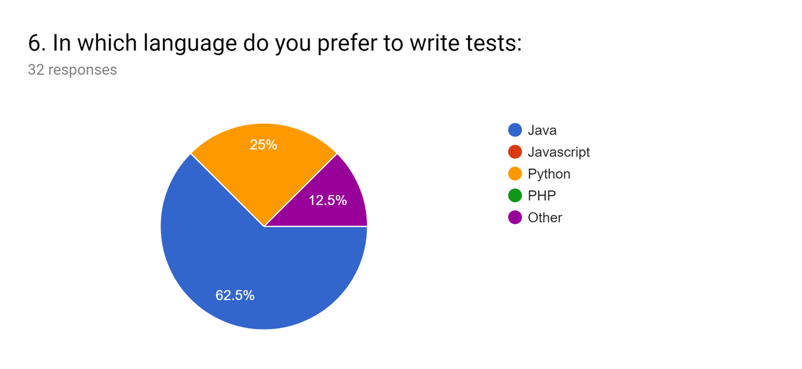

How you identified the problem?
Cost of Software Failures Annually: $1.1 Trillion lost && 315.5 Lost years;
Current solutions, while offering lots of features, also introduce a lot of overhead and complicated configurations. Much needed features like the ones proposed are never aggregated into one application (code versioning, cloud storage etc.). Graphical user interfaces are ambiguous due to the need of providing access to every feature;
What you thought is a solution for the problem?
An open-source application model, offering as much extensibility as possible and a freemium-based revenue (from plugins and cloud storage space) with the possibility of donations.
The solution has to address the main problems: stick to the most necessary features, maintain a simple interface with great performance, offer plugins for special features.
Your plan for customer discovery (short overview before going into detail)
There are two types of potential customers:
those who DO
those who DON’T use automated testing frameworks (but have the need to)
Explain our proposed solutions to both types of customers and gather feedback. For customers who already use an automated testing framework, see which ones are willing to migrate from an existing platform and learn why others won’t (what the reasons are, what features they’re not willing to give up on etc.)
1. Do you, or your current team, possess enough technical skills to build and maintain test automation?
Conclusion: 62.5% responded that they have enough technical skills to build and maintain test automation. We think this is a good result for us because now we know that the majority of teams are using automated testing and we can propose them a solution to optimize and to reduce the time needed to maintain the testing process. Even if they concluded that they posses enough technical skills to be able to build and maintan test automation, we can’t be sure of that. Three levels of skills are required:
Organizing and creating GOOD + MEANINGFUL + EFFECTIVE tests
Running and maintaining test suites created (knowledge of the automation tool)
Automating the tests in the automation tool (knowledge of the tool and the language used in authoring the tests in that tool)
32 responses - 62.5% "Yes"
2. How do you run the automated tests:
Conclusion: The majority use in-house developed application, respectively theirs PC / Laptop and don’t use commercial applications. We can conclude that current applications available on market aren’t good enough or are too expensive. If our product will offer great features and will be available for an attractive price, we can motivate this category of developers to use our solution.

32 responses - 31.3% "Locally in your PC/Laptop"
3. How often do you run automated tests:
Conclusion: We can see that developers run tests often and a framework can greatly reduce the time for teams that are spending on testing and increase overall productivity.

32 responses - 53.1% "Daily"
4. What types of tests you run (multiple responses):
Conclusion: Our product will cover the most popular types of tests including API, Smoke and Acceptance tests and will be useful for most developers.
32 responses - 59.4% "API"
5. HOW do you prefer to create tests and WHT?
Conclusion: Our solution will require writing code for creating tests and as we can see from the survey, this is the preferred method for developers to create tests.

32 responses - 84.4% "Writing code (better structure of tests, component reuse"
6. In which language do you prefer to write tests:
Conclusion: In the first instance, we planned to use PHP language for writing tests, but after we have seen the survey results, we are seriously considering to add a new feature that will offer the possibility to select a language from several available to write tests including Java, Javascript and Python.

32 responses - 62.5% "Java"
7. How useful do you consider the following features for you (with Useless, Useful, Very useful):
Conclusion: As we can see, the developers consider the most of our features useful or very useful. This survey will help us prioritize some features and deliver them from the very beginning.
32 responses - 59.4% "Running tests in serial / parallel && Running tests on different operating systems"
8. What is the one main benefit of test automation you expect to gain?
Conclusion: As we thought, people expect from a testing framework to reduce the time needed for creating and running tests and to increase the overall product quality by increasing the code coverage. We’ll try to optimize our product to be as simple and efficient as possible for creating tests and we’ll offer features as scalability and parallel testing to reduce the testing time.

32 responses - 31.3% "Higher product quality"
9. Which feature would you prefer implemented by default? (considering some performance impact)
From the results obtained through this survey we realized that those interested in automated testing, runs tests locally on theirs PCs, so they could become potential users of our application. People who have an in-house framework will also choose our product.
At the same time we found out that 48.1% do not run the tests every day, so they don’t use their infrastructure to the maximum of potential and could reduce costs by running tests in our application on-demand. We also determined that most of users prefer to write tests as code and the most used languages that our application should support. We also have the list of the most useful and wanted functionalities so we know how to prioritize them for a MVP.
What people wanted from us? Higher confidence, increased quality, faster releases & System consistency from release to release (regression suites)
Describe how these insights have affected your product (if in any way)
Complaints about performance on existing products made us decide that special features have to be offered as plugins, instead of being included in the base product, so that the end product would be simple, fast and limited to basic needs, but also feature-filled if necessary. Customers that are not already using such a framework, wished for fast and simple way to test their applications, without unnecessary complications.
Do you consider that you are ready to move to the Customer Validation stage (to test selling)? Provide arguments
Considering that we’ve covered all complaints about other existing solutions regarding Automated Testing Frameworks and that most potential customers are happy with our other proposals, we’re ready to move on to the next stage!